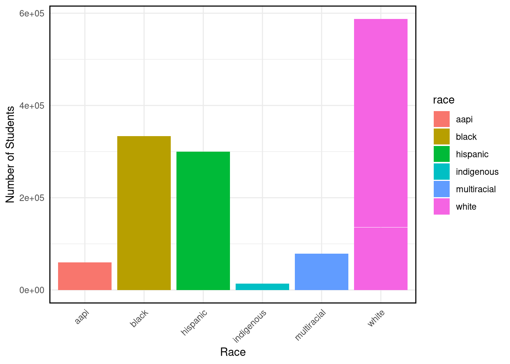
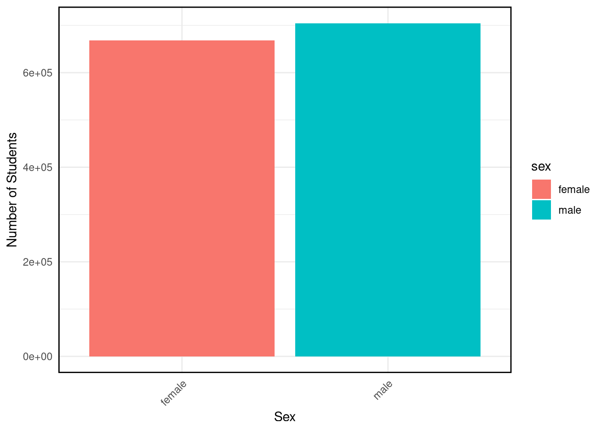
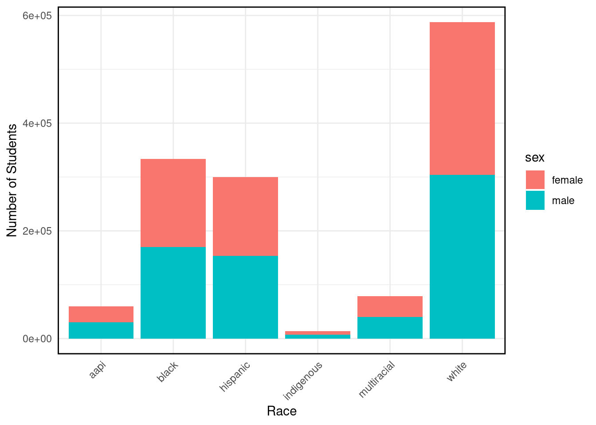
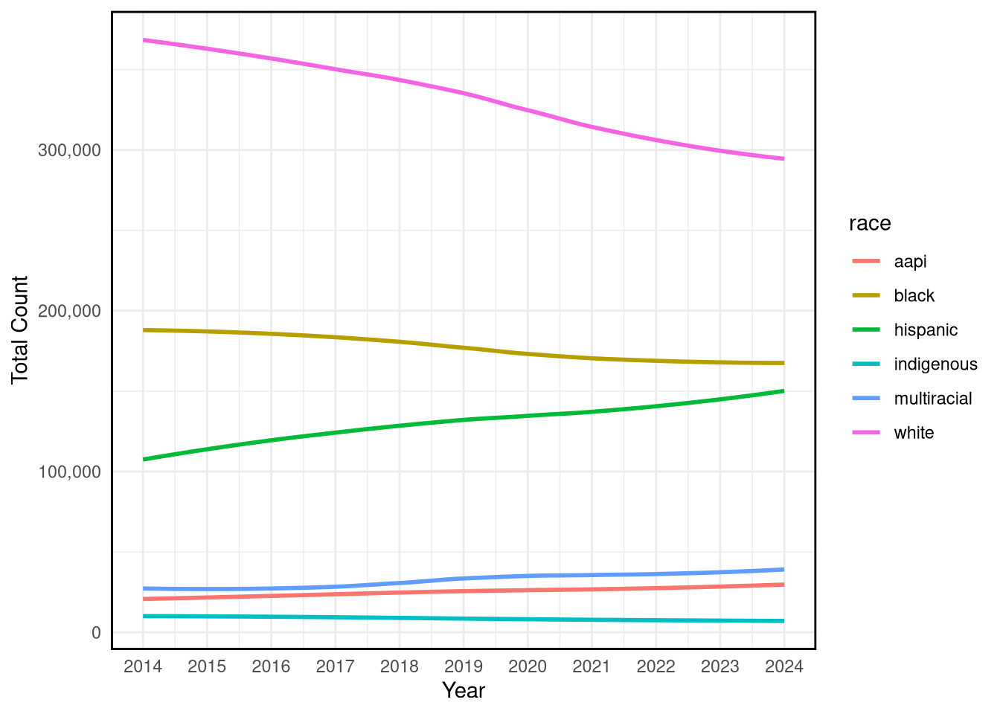
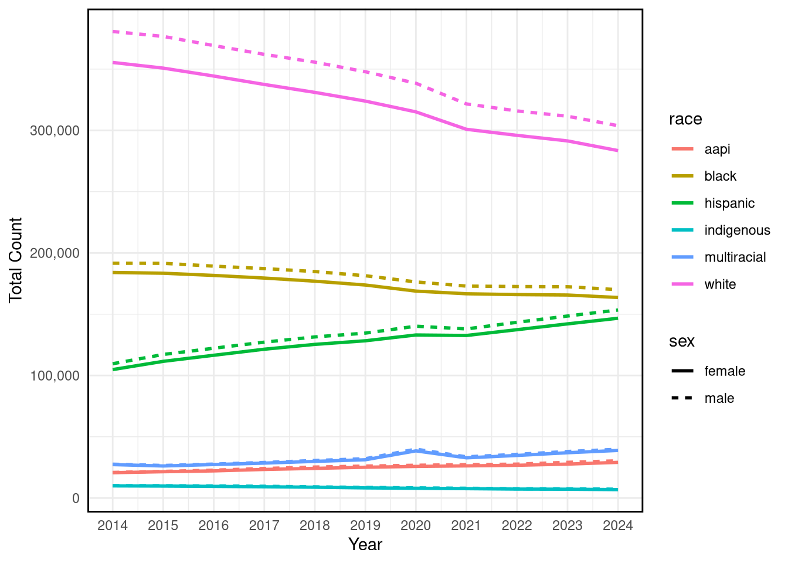
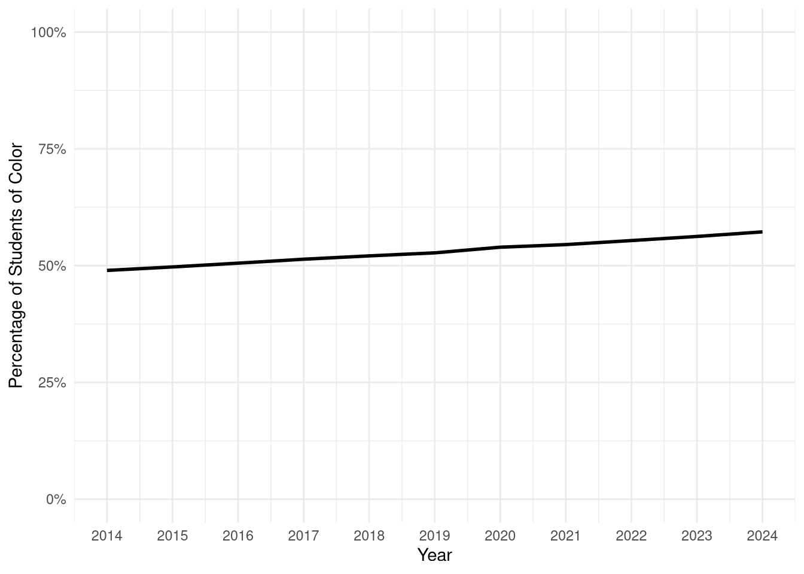
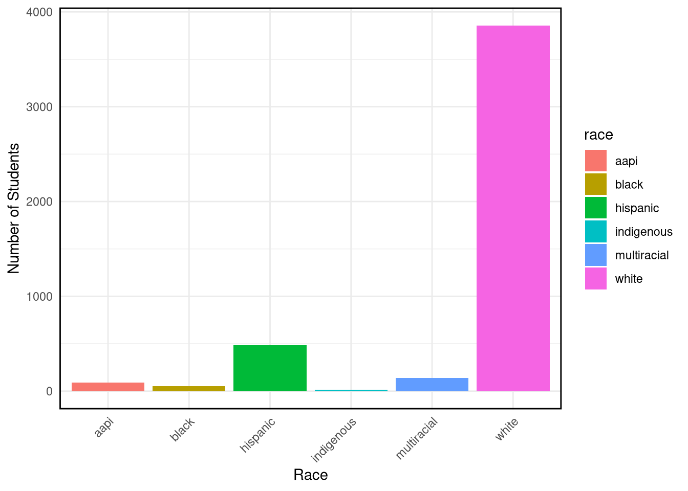
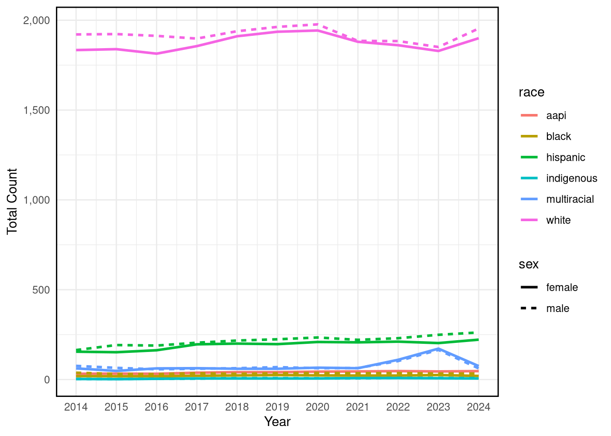
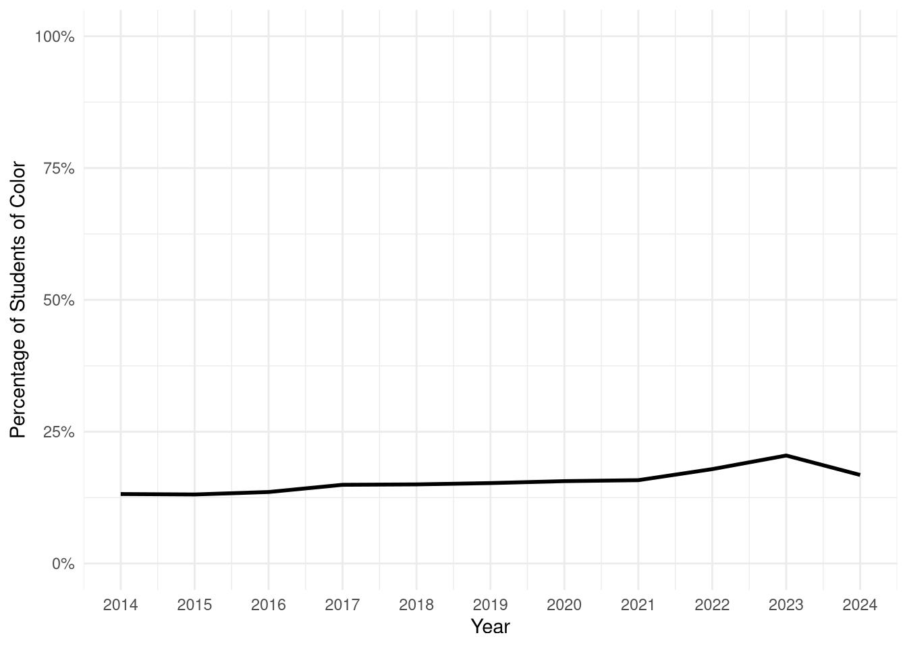

library(dplyr)
library(lubridate)
library(tidyr)
library(ggmap)
library(mapproj)
library(ggplot2)
library(caret)North Carolina Public School Demographics (2013-2023)
Abstract
Fill in later
Introduction
This is an exploration and visualization of North Carolina public school demographic data from February 2014 to February 2024. All data was obtained from the North Carolina Public School Statistical Profile (http://apps.schools.nc.gov/ords/f?p=145:1).
Loading Necessary Packages
Importing Data
demographics <- read.csv("~/STT2860/anguswithee.github.io/demographics.csv")Variables
demographics
Rows: 1,270
Columns: 17
$ Year <chr> "2014", "2014", "2014", "2014", "2014", "2014",…
$ LEA.Name <chr> "Alamance-Burlington Schools", "Alexander Count…
$ INDIAN.Male <int> 46, 4, 2, 8, 0, 6, 5, 0, 7, 7, 26, 59, 52, 9, 6…
$ INDIAN.Female <int> 51, 7, 2, 5, 3, 9, 3, 2, 3, 5, 35, 55, 33, 11, …
$ ASIAN.Male <int> 158, 51, 1, 29, 10, 33, 18, 4, 7, 4, 3, 42, 159…
$ ASIAN.Female <int> 141, 50, 2, 25, 7, 41, 36, 8, 10, 2, 4, 38, 216…
$ HISPANIC.Male <int> 2657, 213, 154, 57, 165, 980, 135, 108, 495, 26…
$ HISPANIC.Female <int> 2600, 212, 147, 66, 133, 934, 161, 109, 492, 27…
$ BLACK.Male <int> 2462, 107, 8, 1030, 9, 351, 511, 3, 1201, 1075,…
$ BLACK.Female <int> 2297, 100, 3, 1046, 7, 342, 484, 3, 1118, 1049,…
$ WHITE.Male <int> 5897, 2232, 551, 623, 1411, 911, 1317, 934, 179…
$ WHITE.Female <int> 5423, 2121, 572, 620, 1372, 938, 1257, 941, 163…
$ PACIFIC.ISLAND..Male <int> 18, 0, 0, 0, 0, 0, 5, 1, 2, 1, 2, 5, 33, 5, 15,…
$ PACIFIC.ISLAND..Female <int> 12, 1, 0, 0, 0, 3, 2, 1, 2, 1, 0, 6, 30, 4, 24,…
$ TWO.OR.MORE.Male <int> 422, 102, 13, 46, 28, 77, 162, 18, 128, 21, 103…
$ TWO.OR.MOREFemale <int> 431, 90, 16, 47, 29, 99, 134, 23, 128, 19, 104,…
$ Total <int> 22615, 5290, 1471, 3602, 3174, 4724, 4230, 2155…There are 17 variables in the demographics data frame.
year: The year the data was collected (2014-2024).LEA.Name: The name of the county or counties in which the data was collected.Indian Male: The number of Indigenous male students in the given county each year.Indian Female: The number of Indigenous female students in the given county each year.Asian Male: The number of Asian male students in the given county each year.Asian Female: The number of Asian female students in the given county each year.Hispanic Male: The number of Hispanic male students in the given county each year.Hispanic Female: The number of Hispanic female students in the given county each year.Black Male: The number of Black male students in the given county each year.Black Female: The number of Black male students in the given county each year.White Male: The number of White male students in the given county each year.White Female: The number of White female students in the given county each year.Pacific Island Male: The number of Pacific Island male students in the given county each year.Paicific Island Female: The number of Hispanic female students in the given county each year.Two or More Male: The number of male students who identify with two or more races in the given county each year.Two or More Female: The number of female students who identify with two or more races in the given county each year.Total: The total number of students in the given county each year.
Data Wrangling
To make the data ideal for visualization, merge and rename variables.
demographics <- demographics |>
group_by(Year,LEA.Name) |>
summarize(aapi_male = ASIAN.Male+PACIFIC.ISLAND..Male,
aapi_female = ASIAN.Female+PACIFIC.ISLAND..Female,
indigenous_male = INDIAN.Male,
indigenous_female = INDIAN.Female,
hispanic_male = HISPANIC.Male,
hispanic_female = HISPANIC.Female,
black_male = BLACK.Male,
black_female = BLACK.Female,
white_male = WHITE.Male,
white_female = WHITE.Female,
multiracial_male = TWO.OR.MORE.Male,
multiracial_female = TWO.OR.MOREFemale)
demographics <- demographics |> filter (Year>1)Then, reshape the dataset from a wide format to a long format.
demographics <- demographics |>
select(Year, LEA.Name,
aapi_male, aapi_female,
indigenous_male, indigenous_female,
hispanic_male, hispanic_female,
black_male, black_female,
white_male, white_female,
multiracial_male, multiracial_female) |>
pivot_longer(
cols = starts_with("aapi") | starts_with("indigenous") |
starts_with("hispanic") | starts_with("black") |
starts_with("white") | starts_with("multiracial"),
names_to = c("race", "sex"),
names_pattern = "(.*)_(male|female)",
values_to = "count"
)
demographics$Year <- as.numeric(demographics$Year)
head(demographics)# A tibble: 6 × 5
# Groups: Year [1]
Year LEA.Name race sex count
<dbl> <chr> <chr> <chr> <int>
1 2014 Alamance-Burlington Schools aapi male 176
2 2014 Alamance-Burlington Schools aapi female 153
3 2014 Alamance-Burlington Schools indigenous male 46
4 2014 Alamance-Burlington Schools indigenous female 51
5 2014 Alamance-Burlington Schools hispanic male 2657
6 2014 Alamance-Burlington Schools hispanic female 2600Data Visualization
NC Public School Demographics (2024)
Before we look at changes over time, let’s start by looking at demographics in 2024.
demo2024 <- demographics |>
filter(Year==2024)ggplot(demo2024, aes(x = race, y = count, fill = race)) +
geom_bar(stat = "identity") +
labs(
x = "Race",
y = "Number of Students"
) +
theme_minimal() +
theme(
plot.title = element_text(hjust = 0.5),
axis.text.x = element_text(angle = 45, hjust = 1)
) +
theme(panel.border = element_rect(color = "black", fill = NA, size = 1))
NC Public School Demographics by Sex (2024)
ggplot(demo2024, aes(x = sex, y = count, fill = sex)) +
geom_bar(stat = "identity") +
labs(
x = "Sex",
y = "Number of Students"
) +
theme_minimal() +
theme(
plot.title = element_text(hjust = 0.5),
axis.text.x = element_text(angle = 45, hjust = 1)
) +
theme(panel.border = element_rect(color = "black", fill = NA, size = 1))
ggplot(demo2024, aes(x = race, y = count, fill = sex)) +
geom_bar(stat = "identity") +
labs(
x = "Race",
y = "Number of Students"
) +
theme_minimal() +
theme(
plot.title = element_text(hjust = 0.5),
axis.text.x = element_text(angle = 45, hjust = 1)
) +
theme(panel.border = element_rect(color = "black", fill = NA, size = 1))
NC Public School Demographics Over Time
demographic_trends <- demographics |>
group_by(Year, race, sex) |>
summarize(total_count = sum(count, na.rm = TRUE), .groups = "drop")ggplot(demographic_trends, aes(x = Year, y = total_count, color = race)) +
geom_smooth(method = "loess", se = FALSE, size = 1)+
labs(
x = "Year",
y = "Total Count"
) +
scale_x_continuous(breaks = unique(demographic_trends$Year)) + # Show all years
scale_y_continuous(labels = scales::comma) +
theme_minimal() +
theme(panel.border = element_rect(color = "black", fill = NA, size = 1))
ggplot(demographic_trends, aes(x = Year, y = total_count, color = race, linetype = sex)) +
geom_line(size = 1) +
labs(
x = "Year",
y = "Total Count"
) +
scale_x_continuous(breaks = unique(demographic_trends$Year)) + # Show all years
scale_y_continuous(labels = scales::comma) +
theme_minimal() +
theme(panel.border = element_rect(color = "black", fill = NA, size = 1))
white_total <- demographic_trends |>
filter(race == "white") |>
group_by(Year) |>
summarize(white_count = sum(total_count), .groups = "drop")
total_count_by_year <- demographic_trends |>
group_by(Year) |>
summarize(total_students = sum(total_count, na.rm = TRUE), .groups = "drop")
poc_data <- left_join(total_count_by_year, white_total, by = "Year") |>
mutate(poc_percentage = 100 * (total_students - white_count) / total_students)ggplot(poc_data, aes(x = Year, y = poc_percentage)) +
geom_line(size = 1) +
labs(
x = "Year",
y = "Percentage of Students of Color"
) +
theme_minimal() +
scale_y_continuous(limits = c(0, 100),labels = scales::percent_format(scale = 1)) +
scale_x_continuous(breaks = unique(demographic_trends$Year))
Watauga County Public School Demographics
wata_demo <- demographics |>
filter(LEA.Name=="Watauga County Schools")
wata_demo2024 <- wata_demo |>
filter(Year==2024)
wata_demo_trends <- wata_demo |>
group_by(Year, race, sex) |>
summarize(total_count = sum(count, na.rm = TRUE), .groups = "drop")
wata_white_total <- wata_demo_trends |>
filter(race == "white") |>
group_by(Year) |>
summarize(white_count = sum(total_count), .groups = "drop")
wata_total_count_by_year <- wata_demo_trends |>
group_by(Year) |>
summarize(total_students = sum(total_count, na.rm = TRUE), .groups = "drop")
wata_poc_data <- left_join(wata_total_count_by_year, wata_white_total, by = "Year") |>
mutate(poc_percentage = 100 * (total_students - white_count) / total_students)ggplot(wata_demo2024, aes(x = race, y = count, fill = race)) +
geom_bar(stat = "identity") +
labs(
x = "Race",
y = "Number of Students"
) +
theme_minimal() +
theme(
plot.title = element_text(hjust = 0.5),
axis.text.x = element_text(angle = 45, hjust = 1)
) +
theme(panel.border = element_rect(color = "black", fill = NA, size = 1))
ggplot(wata_demo_trends, aes(x = Year, y = total_count, color = race, linetype = sex)) +
geom_line(size = 1) +
labs(
x = "Year",
y = "Total Count"
) +
scale_x_continuous(breaks = unique(demographic_trends$Year)) + # Show all years
scale_y_continuous(labels = scales::comma) +
theme_minimal() +
theme(panel.border = element_rect(color = "black", fill = NA, size = 1))
ggplot(wata_poc_data, aes(x = Year, y = poc_percentage)) +
geom_line(size = 1) +
labs(
x = "Year",
y = "Percentage of Students of Color"
) +
theme_minimal() +
scale_y_continuous(limits = c(0, 100),labels = scales::percent_format(scale = 1)) +
scale_x_continuous(breaks = unique(demographic_trends$Year))